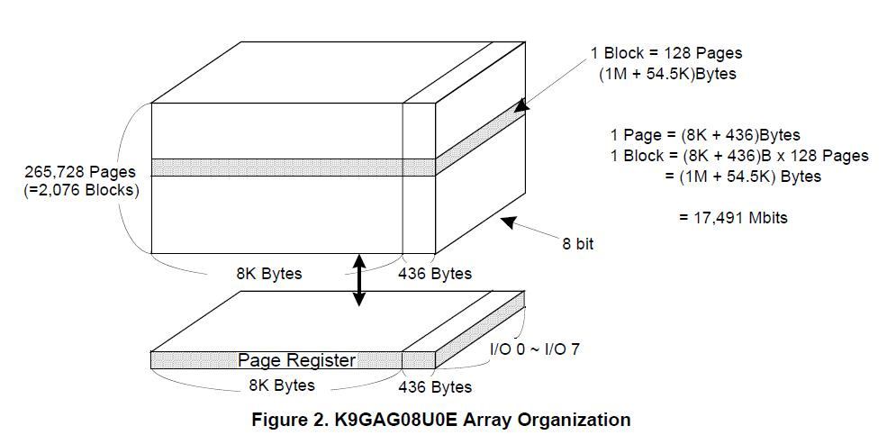
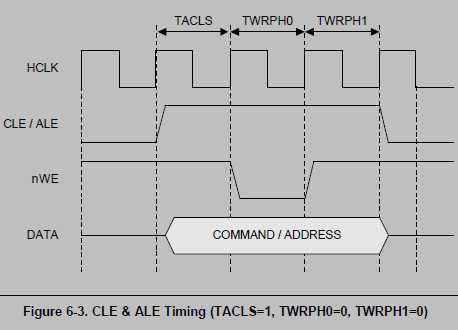
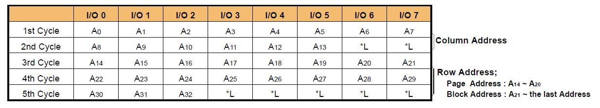

Note: nand flash memory can not access directly, it transfered momery through register.
I has 256MB Nand Flash(K9GAG08U0E) on board, here I will access it's content via NFCON.
nand basic operations
nand flash configure: timming set
the register's value must be set according to the timing request! or the chip will not work correctly! with the value, nand flash controller can keep the level for the specified during time for the nand chip.
# init # important config w4 0x70200000, 0x01005554 w4 0x70200004, 1 # enble nf controller # without the above config, what happens ? try to directly read ID, you will get 00 00 00 00 00 00 :) w1 0x7020000C, 0 # reset addr w1 0x70200008, 0xff # reset command # wait until not busy mem32 0x70200028, 1 # I got 00800019, ready, go! # -------------------- # a really useful test is to read ID! w1 0x70200008, 0x90 # id read command w1 0x7020000c, 0x00 # lock address # wait for query complete mem32 0x70200028, 1 # -------------------------------- mem32 0x70200010, 1 # read first mem32 0x70200010, 1 # read second # I got it! ID = [ec, d5, 84, 72, 50] # try to read one page ! # Attention, look at the below image to find how to send address info w1 0x70200008, 0x00 # read-cicle 1 = enter, send addr w1 0x7020000c, 0x00 # colume addr low : 8 w1 0x7020000c, 0x00 # colume addr high : 4 w1 0x7020000c, 0x00 # row addr low : 8 w1 0x7020000c, 0x00 # row addr mid : 8 w1 0x7020000c, 0x00 # row addr high : 3 w1 0x70200008, 0x30 # read-cicle 2 = end, wait for ready mem32 0x70200028, 1 # wait for ready! # while i < 1024 buf[i] = REG_DATA; mem32 0x70200010, 1 mem32 0x70200010, 1 mem32 0x70200010, 1 mem32 0x70200010, 1 # ... # Note: each read-operation range is [your_addr, this_page_end]
I can't stand the original register value generation, here is one tool I designed, which can do read and generate register describe file, with a very interactive interface: